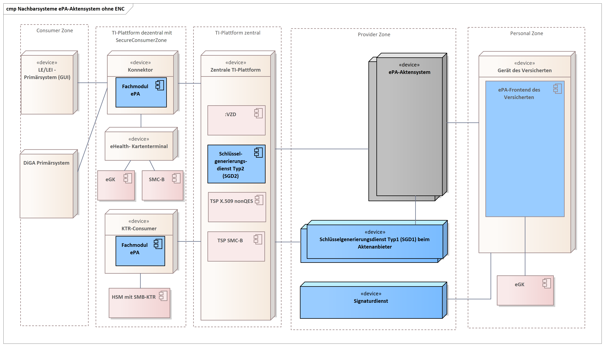
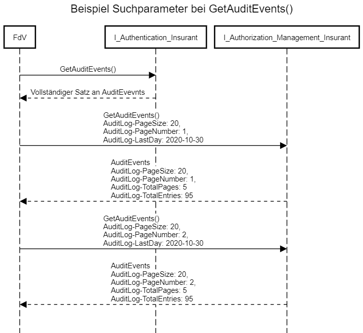
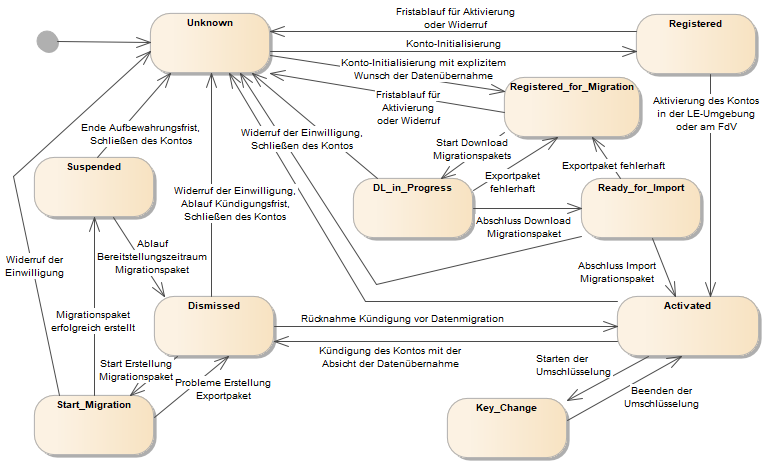

Elektronische Gesundheitskarte und Telematikinfrastruktur
Spezifikation ePA-Aktensystem
| Version | 1.52.0 |
| Revision | 571441 |
| Stand | 01.12.2022 |
| Status | in Bearbeitung |
| Klassifizierung | öffentlich |
| Referenzierung | gemSpec_Aktensystem |
Änderungen zur Vorversion
Anpassungen des vorliegenden Dokumentes im Vergleich zur Vorversion können Sie der nachfolgenden Tabelle entnehmen.
Dokumentenhistorie
| Version | Stand | Kap./ Seite | Grund der Änderung, besondere Hinweise | Bearbeitung |
|---|---|---|---|---|
| 1.0.0 | 18.12.18 | freigegeben | gematik | |
| 1.1.0 | 15.05.19 | Einarbeitung Änderungsliste P18.1 | gematik | |
| 1.2.0 | 28.06.19 | Einarbeitung Änderungsliste P19.1 | gematik | |
| 1.3.0 | 02.10.19 | Einarbeitung Änderungsliste P20.1 | gematik | |
| 1.4.0 | 02.03.20 | Einarbeitung Änderungsliste P21.1 | gematik |
|
| 1.4.1 | 26.05.20 | Einarbeitung Änderungsliste P21.3 | gematik | |
| 1.5.0 | 30.06.20 | Anpassungen gemäß Änderungsliste P22.1 und Scope-Themen aus Systemdesign R4.0.0 | gematik | |
| 1.6.0 | 12.11.20 | Einarbeitung Änderungsliste P22.2 und Scope-Themen Systemdesign R4.0.1 | gematik | |
| 1.7.0 | 19.02.21 | Einarbeitung Änderungsliste P22.5 | gematik | |
| 1.8.0 | 02.06.21 | Einarbeitung Änderungsliste ePA_Maintenance_21.1 | gematik | |
| 1.8.1 | 09.07.21 | Einarbeitung Anpassung IOP-WS (ePA_Maintenance_21.2) | gematik | |
| 1.8.2 | 02.09.21 | 5.8 | Einarbeitung Konn_Maintenance_21.5 | gematik |
| 1.9.0 | 31.01.22 | 5.1, 5.2 | Einarbeitung Änderungsliste ePA_Maintenance_21.4 und ePA_Maintenance_21.5 | gematik |
| 1.9.1 | 31.03.22 | Einarbeitung Änderungsliste ePA_Maintenance_22.1 | gematik | |
| 1.50.0 | 13.04.22 | ePA-Stufe 2.5: gemF_ePA_FDZ_Anbindung | gematik | |
| 1.50.1 | 23.05.22 | Einarbeitung Kommentierung | gematik | |
| 1.51.0 | 25.07.22 | Änderungsliste ePA_Maintenance_22.2 | gematik | |
| 1.52.0 | 01.12.22 | 5.6 | Einarbeitung Änderungsliste ePA_Maintenance_22.3 | gematik |
| 1.53.0 | Einarbeitung Änderungsliste ePA_Maintenance_23.1 | gematik |
Die vorliegende Spezifikation definiert die übergreifenden Anforderungen zu Herstellung, Test und Betrieb des Produkttyps ePA-Aktensystem. Hierbei handelt es sich insbesondere um übergreifende technische Anforderungen, die von allen Komponenten gleichermaßen umzusetzen sind, um organisatorische Anforderungen gegen den Anbieter des ePA-Aktensystems, die für die Realisierung der Anwendungsfälle zur Aktenkontoverwaltung benötigt werden, und um übergreifende Sicherheitsanforderungen. Die Systemzerlegung der Fachanwendung ePA in Komponenten und Produkttypen sowie die Verteilung der Komponenten auf Produkttypen der Telematikinfrastruktur (TI) sind in [gemSysL_ePA#2.1] und in [gemSysL_ePA#4.1] definiert.
Für die einzelnen Komponenten des Produkttyps ePA-Aktensystem existieren eigene Spezifikationsdokumente, in denen die spezifischen Anforderungen der jeweiligen Komponente beschrieben werden.
Das Dokument ist maßgeblich für Anbieter und Hersteller des Produkttyps ePA-Aktensystem sowie für Anbieter und Hersteller von Produkten, die die Schnittstellen des Produkttyps ePA-Aktensystem nutzen.
Dieses Dokument enthält normative Festlegungen zur Telematikinfrastruktur des deutschen Gesundheitswesens. Der Gültigkeitszeitraum der vorliegenden Version und deren Anwendung in Zulassungs- oder Abnahmeverfahren wird durch die gematik mbH in gesonderten Dokumenten (z.B. Dokumentenlandkarte, Produkttypsteckbrief, Leistungsbeschreibung) festgelegt und bekannt gegeben.
Schutzrechts-/Patentrechtshinweis
Die nachfolgende Spezifikation ist von der gematik allein unter technischen Gesichtspunkten erstellt worden. Im Einzelfall kann nicht ausgeschlossen werden, dass die Implementierung der Spezifikation in technische Schutzrechte Dritter eingreift. Es ist allein Sache des Anbieters oder Herstellers, durch geeignete Maßnahmen dafür Sorge zu tragen, dass von ihm aufgrund der Spezifikation angebotene Produkte und/oder Leistungen nicht gegen Schutzrechte Dritter verstoßen und sich ggf. die erforderlichen Erlaubnisse/Lizenzen von den betroffenen Schutzrechtsinhabern einzuholen. Die gematik GmbH übernimmt insofern keinerlei Gewährleistungen.
Spezifiziert werden in dem Dokument die übergreifenden Anforderungen an den Produkttyp ePA-Aktensystem. Die bereitgestellten (angebotenen) Schnittstellen werden in den Spezifikationen der einzelnen Komponenten des ePA-Aktensystems definiert. Benutzte Schnittstellen werden hingegen in der Spezifikation desjenigen Produkttypen beschrieben, der diese Schnittstelle bereitstellt. Auf die entsprechenden Dokumente wird referenziert (siehe auch Anhang A5).
Die vollständige Anforderungslage für den Produkttyp ergibt sich aus weiteren Konzept- und Spezifikationsdokumenten, diese sind in dem Produkttypsteckbrief des Produkttyps ePA-Aktensystem verzeichnet.
Anforderungen als Ausdruck normativer Festlegungen werden durch eine eindeutige ID in eckigen Klammern sowie die dem RFC 2119 [RFC2119] entsprechenden, in Großbuchstaben geschriebenen deutschen Schlüsselworte MUSS, DARF NICHT, SOLL, SOLL NICHT, KANN gekennzeichnet.
Sie werden im Dokument wie folgt dargestellt:
<AFO-ID> - <Titel der Afo>
Text / Beschreibung
[<=]
Dabei umfasst die Anforderung sämtliche zwischen Afo-ID und Textmarke [<=] angeführten Inhalte.
Das „ePA-Aktensystem“ stellt einen komplexen Produkttyp dar. An dieser Stelle folgen daher wesentliche Informationen, die das korrekte Verstehen der Spezifikation fördern:
Das ePA-Aktensystem besteht aus den Komponenten
deren Funktionsweise in separaten Spezifikationen beschrieben sind. Zusätzlich zu diesen Komponenten muss der Anbieter des ePA-Aktensystems einen Schlüsselgenerierungsdienst Typ1 (SGD1) in der Provider Zone zur Verfügung stellen. Dieses Dokument bildet die Klammer über diese logischen Komponenten und spezifiziert insbesondere das Verhältnis des Anbieters und Betreibers zum ePA-Aktensystem sowie organisatorische Prozesse und Schnittstellen gegenüber dem Versicherten als "Kunden" des Anbieters des ePA-Aktensystems.
Abbildung 1: Komponenten des ePA-Aktensystems
Das ePA-Aktensystem eines Anbieters kommuniziert in Richtung des Versicherten jeweils mit einem oder mehreren ePA- Frontends des Versicherten. Die ePA-FdVs können dabei auch von unterschiedlichen Herstellern angeboten werden. In Richtung der Leistungserbringerinstitution kommuniziert das ePA-Aktensystem ausschließlich mit dem Fachmodul ePA im Konnektor. Das Fachmodul ePA im Konnektor übernimmt die Kommunikation mit den Primärsystemen. Das ePA-Aktensystem nutzt außerdem zentrale Dienste der TI-Plattform.

Abbildung 2 Nachbarsysteme des ePA-Aktensystems
Sowohl bei der Registrierung eines Aktenkontos als auch bei einem Anbieterwechsel gibt es Kommunikationsbeziehungen zwischen den Systemen der Anbieter von ePA-Aktensystemen. Im Rahmen der Registrierung zur Eröffnung eines Aktenkontos erfolgt eine Abfrage zwischen den Anbietern, ob für den jeweiligen Versicherten ggf. bereits ein Aktenkonto existiert. Ist dies der Fall, kann eine Registrierung nur abgeschlossen werden, wenn für ein bereits bestehendes Aktenkonto der Status unknown, dismissed oder suspended zurückgemeldet wird.
Hat der Versicherte für den Anbieterwechsel die Migration seiner Daten vom Alt-Anbieter zu seinem neuen Anbieter vorgesehen, erfolgt die Übermittlung eines verschlüsselten Migrationspakets direkt zwischen den Systemen der Anbieter.
Der Produkttyp ePA-Aktensystem wird gemäß der funktionalen Zerlegung in [gemSysL_ePA#4.1] in die dort definierten Komponenten aufgeteilt.
A_17865
Der Anbieter des ePA-Aktensystems MUSS unabhängig von Anbietern von Signaturdiensten und vom Anbieter des Schlüsselgenerierungsdienstes SGD2 der zentralen TI-Plattform sein, d.h. es sind mindestens jeweils eigenständige Rechtspersönlichkeiten mit eigenständigen operativen Geschäfts- und Betriebsführungen und es ist eine strikte Vermeidung von Personenidentitäten bzw. Doppelrollen in den Funktionen Geschäftsführung, leitende Mitarbeiter und Zugangsberechtigte zum Betriebsort des Signaturdienstes, Schlüsselgenerierungsdienstes SGD2 bzw. ePA-Aktensystems gewährleistet.
<=
Hinweis: Die Anforderung schließt nicht aus, dass die Anbieter verbundene Unternehmen im Sinne des § 15 AktG sind.
A_21248-01
Der Anbieter des ePA-Aktensystems und der Anbieter des KTR-Consumers MÜSSEN dafür Sorge tragen, dass ihr beauftragter Betreiber für das ePA-Aktensystem unabhängig vom beauftragten Betreiber des KTR-Consumers ist, d.h. es sind mindestens jeweils eigenständige Rechtspersönlichkeiten mit eigenständigen operativen Geschäfts- und Betriebsführungen und es ist eine strikte Vermeidung von Personenidentitäten bzw. Doppelrollen in den Funktionen Geschäftsführung, leitende Mitarbeiter und Zugangsberechtigte zum Betriebsort des KTR-Consumers bzw. des ePA-Aktensystems gewährleistet. <=
A_18765
Falls ein Anbieter eines ePA-Aktensystems und ein Anbieter eines Signaturdienstes den Versicherten eine gemeinsame Kontaktstelle (z.B. User-Help-Desk) sowohl für Anfragen zum ePA-Aktensystem als auch zum Signaturdienst anbieten, MÜSSEN sowohl der Anbieter des ePA-Aktensystems als auch der Anbieter des Signaturdienstes sicherstellen, dass
A_19124
Falls ein Anbieter eines ePA-Aktensystems und ein Anbieter eines Signaturdienstes den Versicherten eine gemeinsame Kontaktstelle (z.B. User-Help-Desk) sowohl für Anfragen zum ePA-Aktensystem als auch zum Signaturdienst anbieten, MÜSSEN sowohl der Anbieter des ePA-Aktensystems als auch der Anbieter des Signaturdienstes sicherstellen, dass die Mitarbeiter der Kontaktstelle die Anfragen der Versicherten lediglich an das ePA-Aktensystem bzw. den Signaturdienst weiterleiten können und technisch verhindert wird, dass die Mitarbeiter der Kontaktstelle Änderungen an den Systemen des ePA-Aktensystems bzw. des Signaturdienstes selbstständig durchführen können.
<=
A_19123
Falls ein Anbieter eines ePA-Aktensystems und ein Anbieter eines Signaturdienstes den Versicherten eine gemeinsame Kontaktstelle (z.B. User-Help-Desk) sowohl für Anfragen zum ePA-Aktensystem als auch zum Signaturdienst anbieten, MÜSSEN sowohl der Anbieter des ePA-Aktensystems als auch der Anbieter des Signaturdienstes folgendes dokumentieren:
A_15246
Der Anbieter des ePA-Aktensystems MUSS als homeCommunityID [gemSpec_DM_ePA#2.1.4.6] eine OID verwenden, die er beim DIMDI beantragt.
<=
A_14127-04
Der Anbieter des ePA-Aktensystems MUSS DNS A, PTR und SRV Resource Records für sein Aktensystem im Namensraum der TI gemäß folgender Tabelle verwalten.
Tabelle 1: Tab_ePA_Service Discovery
| Resource Record Bezeichner |
Resource Record Type |
Beschreibung |
|---|---|---|
| FQDN des authn Service | A | A Resource Records zur Namensauflösung von FQDN des authn Services ePA-Aktensystems des jeweiligen Anbieters in IP-Adressen |
| FQDN des authz Service | A | A Resource Records zur Namensauflösung von FQDN des authz Services ePA-Aktensystems des jeweiligen Anbieters in IP-Adressen |
| FQDN des docv Service | A | A Resource Records zur Namensauflösung von FQDN des docv Services ePA-Aktensystems des jeweiligen Anbieters in IP-Adressen |
| FQDN des sgd1 Service | A | A Resource Records zur Namensauflösung von FQDN des sgd1 Services ePA-Aktensystems des jeweiligen Anbieters in IP-Adressen |
| _authn._tcp.epa.telematik |
PTR |
Ermittlung aller ePA-Authentisierungs-Dienste “<hcid> authn Service“ |
| _authz._tcp.epa.telematik |
PTR |
Ermittlung aller ePA-Autorisierungs-Dienste “<hcid> authz Service“ |
| _docv._tcp.epa.telematik |
PTR |
Ermittlung aller ePA-Dokumentenverwaltungs-Dienste “<hcid> docv Service“ |
| _sgd1._tcp.epa.telematik |
PTR |
Ermittlung des zum ePA-Aktensystem gehörigen Schlüsselgenerierungsdienstes (Typ 1) "<hcid> sgd1 Service" |
| _gwvers._tcp.epa.telematik | PTR | Ermittlung aller Internet-FQDN aller ePA-Aktensysteme |
| _amcre._tcp.epa.telematik | PTR | Ermittlung aller ePA-Autorisierungs-Dienste für mandantenübergreifende Anfragen „<hcid> authz Service“ |
| “<hcid> authn Service“ |
SRV und TXT |
SRV Resource Record zur Ermittlung des FQDN des authn-Dienstes; TXT Resource Record zur Ermittlung des Pfades der URL zum authn-Dienst "txtvers=1" "hcid=<hcid>" "path=<Bezeichner der Komponente als Pfadbestandteil>" |
| “<hcid> authz Service“ |
SRV und TXT |
SRV Resource Record zur Ermittlung des FQDN des authz-Dienstes; TXT Resource Record zur Ermittlung des Pfades der URL zum authz-Dienst "txtvers=1" "hcid=<hcid>" "path=<Bezeichner der Komponente als Pfadbestandteil>" |
| “<hcid> docv Service“ |
SRV und TXT |
SRV Resource Record zur Ermittlung des FQDN des docv-Dienstes; TXT Resource Record zur Ermittlung des Pfades der URL zum docv-Dienst "txtvers=1" "hcid=<hcid>" "path=<Bezeichner der Komponente als Pfadbestandteil>" |
| “<hcid> sgd1 Service“ |
SRV und TXT |
SRV Resource Record zur Ermittlung des FQDN des sgd_typ1-Dienstes; TXT Resource Record zur Ermittlung des Pfades der URL zum sgd_typ1-Dienst "txtvers=1" "hcid=<hcid>" "path=<Bezeichner der Komponente als Pfadbestandteil>" |
| “<hcid> gwvers Service“ | SRV und TXT | SRV Resource Record zur Ermittlung des FQDN des Aktensystems; TXT Resource Record zur Ermittlung des Namens des Anbieters des Aktensystems "txtvers=1" "hcid=<hcid>" "name =<Name Anbieter>" |
Hinweis zum „amcre“-Eintrag: dieser ist NICHT für jeden Aktensystem-Mandanten anzulegen, sondern nur für eine Instanz (oder mehrere Instanzen) pro Aktensystem, welche die mandantenübergreifenden CheckRecordExist-Anfragen mit dem Parameter AllMandators=true beantworten sollen.
Wenn im Bezeichner die HCID verwendet wird, sollen . durch - ersetzt werden, da . Sonderzeichen im DNS darstellen.
Beispiel: 1.2.276.0.76.3.1.91 wird zu 1-2-276-0-76-3-1-91
Beispiele zur Dienstlokalisierung
1. Für HCID: 1.2.276.0.76.3.1.91
_authn._tcp.epa.telematik. 86400 IN PTR _1-2-276-0-76-3-1-91._authn._tcp.epa.telematik.
_1-2-276-0-76-3-1-91._authn._tcp.epa.telematik. 86400 IN SRV 5 10 443 authn.hrst1.epa.telematik.
_1-2-276-0-76-3-1-91._authn._tcp.epa.telematik. 86400 IN TXT „txtvers=1“ „hcid=1.2.276.0.76.3.1.91“ „path=/“
authn.hrst1.epa.telematik IN A 10.28.2.15
_authz._tcp.epa.telematik. 86400 IN PTR _1-2-276-0-76-3-1-91._authz._tcp.epa.telematik.
_1-2-276-0-76-3-1-91._authz._tcp.epa.telematik. 86400 IN SRV 5 10 443 authz.hrst1.epa.telematik.
_1-2-276-0-76-3-1-91._authz._tcp.epa.telematik. 86400 IN TXT „txtvers=1“ „hcid=1.2.276.0.76.3.1.91“ „path=/“
authz.hrst1.epa.telematik IN A 10.28.2.16
_docv._tcp.epa.telematik. 86400 IN PTR _1-2-276-0-76-3-1-91._docv._tcp.epa.telematik.
_1-2-276-0-76-3-1-91._docv._tcp.epa.telematik. 86400 IN SRV 5 10 443 docv.hrst1.epa.telematik.
_1-2-276-0-76-3-1-91._docv._tcp.epa.telematik. 86400 IN TXT „txtvers=1“ „hcid=1.2.276.0.76.3.1.91“ „path=/“
docv.hrst1.epa.telematik IN A 10.28.2.17
_sgd1._tcp.epa.telematik. 86400 IN PTR _1-2-276-0-76-3-1-91._sgd1._tcp.epa.telematik.
_1-2-276-0-76-3-1-91._sgd1._tcp.epa.telematik. 86400 IN SRV 5 10 443 sgd1.hrst1.epa.telematik.
_1-2-276-0-76-3-1-91._sgd1._tcp.epa.telematik. 86400 IN TXT „txtvers=1“ „hcid=1.2.276.0.76.3.1.91“ „path=/“
sgd1.hrst1.epa.telematik IN A 10.28.2.14
_gwvers._tcp.epa.telematik. 86400 IN PTR _1-2-276-0-76-3-1-91._gwvers._tcp.epa.telematik.
_1-2-276-0-76-3-1-91._gwvers._tcp.epa.telematik. 86400 IN SRV 5 10 443 epa.anbieter1.de.
_1-2-276-0-76-3-1-91._gwvers._tcp.epa.telematik. 86400 IN TXT „txtvers=1“ „hcid=1.2.276.0.76.3.1.91“ „name=AnbierKK1“
2. Für HCID: 1.2.276.0.76.3.1.99
authn._tcp.epa.telematik. 86400 IN PTR _1-2-276-0-76-3-1-99._authn._tcp.epa.telematik.
_1-2-276-0-76-3-1-99._authn._tcp.epa.telematik. 86400 IN SRV 5 10 443 authn.hrst2.epa.telematik.
_1-2-276-0-76-3-1-99._authn._tcp.epa.telematik. 86400 IN TXT „txtvers=1“ „hcid=1.2.276.0.76.3.1.99“ „path=/“
authn.hrst2.epa.telematik. IN A 10.28.2.25
_authz._tcp.epa.telematik. 86400 IN PTR _1-2-276-0-76-3-1-99._authz._tcp.epa.telematik.
_1-2-276-0-76-3-1-99._authz._tcp.epa.telematik. 86400 IN SRV 5 10 443 authz.hrst2.epa.telematik.
_1-2-276-0-76-3-1-99._authz._tcp.epa.telematik. 86400 IN TXT „txtvers=1“ „hcid=1.2.276.0.76.3.1.99“ „path=/“
authz.hrst2.epa.telematik. IN A 10.28.2.26
_docv._tcp.epa.telematik. 86400 IN PTR _1-2-276-0-76-3-1-99._docv._tcp.epa.telematik.
_1-2-276-0-76-3-1-99._docv._tcp.epa.telematik. 86400 IN SRV 5 10 443 docv.hrst2.epa.telematik.
_1-2-276-0-76-3-1-99._docv._tcp.epa.telematik. 86400 IN TXT „txtvers=1“ „hcid=1.2.276.0.76.3.1.99“ „path=/“
docv.hrst2.epa.telematik. IN A 10.28.2.27
_sgd1._tcp.epa.telematik. 86400 IN PTR _1-2-276-0-76-3-1-99._sgd1._tcp.epa.telematik.
_1-2-276-0-76-3-1-99._sgd1._tcp.epa.telematik. 86400 IN SRV 5 10 443 sgd1.hrst2.epa.telematik.
_1-2-276-0-76-3-1-99._sgd1._tcp.epa.telematik. 86400 IN TXT „txtvers=1“ „hcid=1.2.276.0.76.3.1.99“ „path=/“
sgd1.hrst2.epa.telematik. IN A 10.28.2.24
_gwvers._tcp.epa.telematik. 86400 IN PTR _1-2-276-0-76-3-1-99._gwvers._tcp.epa.telematik.
_1-2-276-0-76-3-1-99._gwvers._tcp.epa.telematik. 86400 IN SRV 5 10 443 epa.anbieter2.de.
_1-2-276-0-76-3-1-99._gwvers._tcp.epa.telematik. 86400 IN TXT „txtvers=1“ „hcid=1.2.276.0.76.3.1.99“ „name=AnbierKK2“
A_14128-03
Der Anbieter des ePA-Aktensystems MUSS in den Nameservern Internet die Resource Records gemäß nachstehender Tabelle verwalten.
Tabelle 2: Tab_ePA_FQDN
| Resource Record Type |
Beschreibung |
|---|---|
| A |
A Resource Records zur Namensauflösung von FQDN des ePA-Aktensystems des jeweiligen Anbieters in IP-Adressen |
| TXT |
TXT Resource Records zur Ermittlung der Aufruf-Schnittstellen der jeweiligen Module des ePA-Aktensystems. Alle für die Adressierung dieser Module benötigten Resource Records MÜSSEN bereitgestellt werden und deren Zugehörigkeit zum Aktensystem des Anbieters durch Clients (ePA-Frontend des Versicherten) eindeutig zu erkennen sein. Die in den Klammern angegebenen Kürzel MÜSSEN für das jeweilige Modul verwendet werden.
"txtvers=1" "hcid=<HomeCommunityID>" "authn=/<pfad_authentisierung>/" "authz=/<pfad_autorisierung>/" "avzd=/<pfad_verzeichnisdienst_proxy>/" "docv=/<pfad_dokumentenverwaltung>/" "ocspf=/<pfad_status_proxy>/" "sgd1=/<pfad_Schlüsselgenerierungsdienst_typ1>/" "sgd2=/<pfad_Schlüsselgenerierungsdienst_typ2>/" "proxy=/<pfad_transport_proxy>/" |
Beispiel zur Dienstlokalisierung im Internet-DNS:
*.epa1.de. IN A <IP-Adresse>
*.epa1.de. TTL IN TXT "txtvers=1" "hcid=1.2.276.0.76.3.1.99" "authn=/authn/" "authz=/authz/" "avzd=/avzd/" "docv=/docv/" "ocspf=/ocspf/" "sgd1=/SGD1/" "sgd2=/SGD2/"
ggf. weitere Records für SRV, NS
A_22688
Der Anbieter des ePA-Aktensystems MUSS an seinen Zugangsgateway des Versicherten die Schnittstellenkonfiguration aus A_14128-* über den URL-Pfadnamen (bwz. die Datei) /.well-known/epa-configuration.json eine JSON-Repräsentation aller dieser Attribute (vgl. A_14128-*) verfügbar machen.
D. h. der Aufrufende (ePA-FdV) MUSS wenn er diesen Pfad per HTTP-GET abfragt ein JSON-Objekt (also Content-Type "application/json") vom Zugangsgateway des Versicherten erhalten der Art
{
"ocspf" : "...Wert1...",
"hcid" : "...Wert2...",
"authn" : "...Wert3...",
"authz" : "...Wert4...",
....
} <=
A_22687
Das ePA-Aktensystem MUSS sicherstellen, dass dem Anbieter des ePA-Aktensystems die technische Möglichkeit bereitgestellt wird A_22688-* umzusetzen. <=
A_17969-04
Der Anbieter des ePA-Aktensystems MUSS alle nach außen angebotenen Dienste der Komponenten Autorisierung, Zugangsgateway (Authentisierung) sowie ePA-Dokumentenverwaltung unter den folgenden URLs zur Verfügung stellen und eingehende SOAP- und REST-Nachrichten entsprechend verarbeiten:
https://<FQDN aus DNS Lookup>:443/<Komponente aus DNS Lookup>/<Fester Wert der Schnittstelle gemäß [gemSysL_ePA#4.2]>
Daraus ergeben sich folgende Konstellationen für den Aufbau von komponentenspezifischen URLs (in spitzen Klammern dargestellte Werte sind dynamisch)für den Aufruf des Aktensystem vom
Aufgrund der informationstechnischen Trennung der Komponenten des ePA-Aktensystems protokolliert jede Komponente für sich. Hierbei protokollieren das Zugangsgateway des Versicherten (Authentisierung_Vers) und die Komponente Autorisierung jeweils in ein eigenes Verwaltungsprotokoll und die Komponente Dokumentenverwaltung in das § 291a-konforme Protokoll und in ein Verwaltungsprotokoll für den Versicherten bzw. seine Vertreter. Die Komponenten des ePA-Aktensystems protokollieren gemäß der Festlegungen in [gemSpec_DM_ePA#A_14471-04] und stellen dem ePA-Frontend des Versicherten jeweils eine Schnittstelle für den Abruf der Protokolleinträge zur Verfügung.
A_14513-01
Der Anbieter des ePA-Aktensystems MUSS sicherstellen, dass die Verwaltungsprotokolldaten und die Daten der Zugriffsprotokolle nach § 291a SGB V der Versicherten gegen unberechtigte Veränderung und unberechtigtes Löschen geschützt sind. <=
A_14512
Der Anbieter des ePA-Aktensystems MUSS Einträge des Verwaltungsprotokolls um seine HomeCommunityID sowie um seinen Namen, mit dem er gegenüber den Versicherten auftritt, gemäß den Festlegungen in A_14471-* ergänzen. <=
A_15141
Der Anbieter des ePA-Aktensystems MUSS sicherstellen, dass ein Zugriff auf Verwaltungsprotokolle des Versicherten in den Komponenten des ePA-Aktensystems durch den Anbieter ausgeschlossen ist, außer für den Fall, dass die Zugriffe zur Lösung eines durch den Versicherten gemeldeten Problems erforderlich sind und der Versicherte dem Zugriff explizit zugestimmt hat. <=
A_19051
Der Anbieter des ePA-Aktensystems MUSS sicherstellen, dass das ePA-Aktensystem die zum Zwecke der Datenschutzkontrolle für den Versicherten erstellten Verwaltungsprotokolldaten und Protokolldaten von Zugriffen und Zugriffsversuchen auf Daten der elektronischen Patientenakte des Versicherten in der Komponente Dokumentenverwaltung nicht früher als nach drei Jahren löscht. Nach dieser Frist MUSS unverzüglich eine automatisierte Löschung durch das ePA-Aktensystem erfolgen. <=
A_21108
Falls das Aktenkonto eines Versicherten geschlossen wird, MUSS der Anbieter des ePA-Aktensystems sicherstellen, dass die Verwaltungsprotokolle des Versicherten bis Ablauf der gesetzlich geforderten Aufbewahrungsfrist von drei Jahren für den ausschließlichen Zweck der Auskunft des Versicherten oder aufsichtsrechtlicher Kontrollen noch zur Verfügung stehen und den Versicherten hierüber informieren.
<=
A_21109
Falls das Aktenkonto eines Versicherten geschlossen wird, MUSS der Anbieter des ePA-Aktensystems den Versicherten darauf hinweisen, seine Protokolldaten aus der Akte für eine weitere Verwendung selbstständig zu exportieren, da diese nach Schließen der Akte im Aktensystem nur eingeschränkt und nicht mehr vollständig für datenschutzrechtliche Auskünfte zur Verfügung stehen.
<=
Hinweis: Die obige Anforderung umfasst insbesondere auch das Schließen ohne ePA-FdV, z. B. schriftliche Kündigung. Für das Schließen des Kontos mittels ePA-FdV gibt es im ePA-FdV einen entsprechenden Hinweis. Nach Schließen der Akte stehen dem Versicherten nur noch die Verwaltungsprotokolle, aber nicht mehr die Protokolle aus der Dokumentenverwaltung zur Verfügung.
A_21204
Die Komponenten des ePA-Aktensystems MÜSSEN beim Signieren eines Protokolls im PDF/A-Format eine PAdES-Signatur gemäß [PAdES-3] und [PAdES Baseline Profile] erstellen. Bei der Signaturerstellung ist das Attribut signing certificate reference gemäß den Vorgaben aus [PAdES-3] Kapitel 4.4.3 „Signing Certificate Reference Attribute“ anzulegen. <=
Durch die Baseline-Profilierung [PAdES Baseline Profile] wird festgelegt, wie der Signaturzeitpunkt, gemessen als Systemzeit des Aktensystems, in die Signatur eingebracht wird.
Da sich in den Komponenten Dokumentenverwaltung, Authentisierung Versicherter und Autorisierung über die Zeit viele Protokolleinträge in den Protokollen (Verwaltungsprotokoll, Protokoll gemäß § 291a) sammeln, kann es sinnvoll sein, nur Teile davon abzurufen, um sowohl Server als auch Client nicht unnötig zu belasten.
Die folgenden Anforderungen beschreiben, wie die Menge der Protolleinträge beim Protokollabruf eingeschränkt werden können.
Wenn ein Client keinerlei Filtervorgaben macht, erhält er immer alle Protokolleinträge zurück.
A_21303-04
Beim Abrufen von Protokollen über die Schnittstellen I_Authentication_Insurant::getAuditEvents,I_Authentication_Insurant::getSignedAuditEvents, I_Authorization_Management_Insurant::getAuditEvents,I_Authorization_Management_Insurant::getSignedAuditEvents, I_Account_Management_Insurant::GetAuditEvents und I_Account_Management_Insurant::GetSignedAuditEvents MÜSSEN die Komponenten Authentisierung, Autorisierung und ePA-Dokumentenverwaltung die folgenden Ein- und Ausgabeparameter (Suchparameter) unterstützen:
| Parameter |
Semantik |
Opt. |
Format |
Request |
Response |
|---|---|---|---|---|---|
| PageSize |
Legt die Zahl der Einträge je Seite fest. Muss immer zusammen mit Parameter PageNumber verwendet werden. |
R |
Integer (> 0) |
X |
X |
| PageNumber |
Legt die Seite fest, die von der aufgerufenen Komponente ausgeliefert werden soll. Muss immer zusammen mit Parameter PageSize verwendet werden. |
R |
Integer (> 0) |
X |
X |
| LastDay |
Legt den letzten Tag (inclusive)/Zeitpunkt fest, für den Audit logs ausgeliefert werden sollen |
O |
YYYY-MM-DD oder YYYY-MM-DDThh:mm:ssZ |
X |
|
| TotalPages |
Gibt die Anzahl der vorhandenen Seiten an. Darf nur bei Verwendung des Client-Parameters PageSize/PageNumber zurückgegeben werden. |
R |
Integer (>= 0) |
|
X |
| TotalEntries |
Gibt die Anzahl der vorhandenen Audit Logs an. Darf nur bei Verwendung des Client-Parameters PageSize/PageNumber zurückge-geben werden. |
R |
Integer (>=0) |
|
X |
Die Verpflichtung für einzelne Parameter ("R") ist nur dann gegeben, wenn grundsätzlich gefiltert werden soll (siehe auch A_21329-*). PageSize und PageNumber müssen immer zusammen verwendet werden. Dagegen kann LastDay auch alleine oder in Kombination mit PageSize plus PageNumber verwendet werden.
Das folgende Sequenzdiagramm zeigt zwei exemplarische Zugriffe auf die Schnittstelle GetAuditEvents() in Authentisierung und Autorisierung:

Im ersten Fall erfolgt der Zugriff ohne Suchparameter im Request, wodurch die Komponente alle AuditEvents zurück liefert.
Im zweiten Fall, beim Zugriff auf die Autorisierung werden die Suchparameter gesetzt, wodurch die Autorisierung nur eine Auswahl an AuditEvents ausliefert und die beiden Parameter für die Anzahl der Seiten und die Anzahl der Einträge setzt.
A_21304-01
Falls das ePA-Frontend des Versicherten keine Parameter gemäß A_21303-* sendet, MÜSSEN die Komponenten Authentisierung Versicherter, Autorisierung und ePA-Dokumentenverwaltung immer das vollständige Protokoll zurück liefern. <=
A_21329-01
Falls das ePA-Frontend des Versicherten keine Parameter gemäß A_21303-* sendet, DÜRFEN die Komponenten Authentisierung Versicherter, Autorisierung und ePA-Dokumentenverwaltung ebenfalls keine Parameter gemäß A_21303-* übertragen. <=
A_21310
Die Komponenten Authentisierung, Autorisierung und ePA-Dokumentenverwaltung MÜSSEN bei Verwendung der Parameter gemäß A_21303-* die resultierenden Einträge in zeitlich absteigend sortierter Reihenfolge zurückgeben, wobei der aktuellste Eintrag auf Seite 1 an Position 1 steht, also zuerst übertragen wird. <=
A_21306
Werden vom Client beim Filtern gemäß A_21303-* mehr Einträge pro Seite angefragt, als vorhanden sind, MUSS die angefragte Komponente (Authentisierung, Autorisierung oder ePA-Dokumentenverwaltung) so viele Einträge zurückgegeben, wie für diese Seite vorhanden sind.
<=
Es führt nicht zu einem Fehler, mehr Einträge anzufordern, als tatsächlich vorhanden sind. Andere Fehler hingegen führen zum Abbruch und einem HTTP-Fehler (A_21307-*).
A_21307-01
Werden vom Client ungültige Parameterwerte beim Filtern gemäß A_21303-* gesetzt (z. B. angeforderte Seite > maximal verfügbare Seitenzahl oder fehlende Parameterangaben), MUSS die angefragte Komponente (Authentisierung, Autorisierung oder ePA-Dokumentenverwaltung) einen Fehler (SYNTAX_ERROR) zurückgeben. Eine Ausnahme hiervon ist der Spezialfall, dass keine Protokolleinträge vorhanden sind. In diesem Fall wird die Anfrage nicht mit einem Fehler abgebrochen, sondern die Antwort enthält dann eine leere AuditMessage, die Werte für PageSize und PageNumber werden wie im Request angegeben, TotalPages und TotalEntries werden auf 0 gesetzt.
<=
Die Übermittlung dieser Fehlermeldung aus der ePA-Dokumentenverwaltung erfolgt innerhalb des aufgebauten VAU-Kanals – also verschlüsselt.
A_21308-02
Die Komponenten Authentisierung, Autorisierung und ePA-Dokumentenverwaltung DÜRFEN beim Protokollabruf gemäß A_21303-* oder auch beim Abruf des gesamten Protokolls die angeforderte Anzahl Treffer pro Seite bei sehr großen Seitenangaben (PageSize) des Clients einschränken, also weniger Treffer zurückgeben als angefordert (jedoch nicht weniger als 100), sofern dies zum Schutz vor DoS-Angriffen notwendig ist.
<=
Um erwartete und unbeabsichtigte Abweichungen in der Bearbeitung von Operationsaufrufen nachvollziehen zu können, benötigt ein Administrator des ePA-Aktensystems geeignete Anhaltspunkte für die Fehlersuche. Hierfür ist ein Verlaufsprotokoll eine geeignete Lösung.
A_15064
Die Komponenten des ePA-Aktensystems KÖNNEN im Testbetrieb ein Debug-Protokoll schreiben, welches eine erweiterte Protokollierung für Testzwecke ermöglicht.
<=Hinweis: Die Anforderung A_15064 beschränkt den Debug-Modus auf Testzwecke. Im Produktivbetrieb ist der Debug-Modus nicht zulässig.
A_15065
Die Komponenten des ePA-Aktensystems, mit Ausnahme der VAU der Komponente ePA-Dokumentenverwaltung, MÜSSEN ein Verlaufsprotokoll schreiben, das geeignet ist, die aufgerufenen Operationen und internen Abläufe der Komponente nachzuvollziehen. Die Komponente MUSS im Verlaufsprotokoll Einträge mit folgendem Inhalt erfassen:
[Vorgangsbezeichner, Datum und Uhrzeit des Beginns des Vorgangs, Ergebnis des Vorgangs z.B. Erfolg/Misserfolg].
<=
A_15066
Die Komponenten des ePA-Aktensystems MÜSSEN den Zugriff auf Protokolldateien auf autorisierte Nutzer beschränken.
<=A_15067
Die Komponenten des ePA-Aktensystems DÜRFEN personenbezogene Informationen, medizinische Informationen und kryptografisches Schlüsselmaterial NICHT protokollieren. <=
A_15185
Die Komponenten des ePA-Aktensystems MÜSSEN für Fehlermeldungen, die auf dem XML-Schema [TelematikError.xsd] basieren, die unten aufgeführten Elemente wie folgt belegen:
Die Anforderungen zur Verfügbarkeit ergeben sich aus [gemSpec_Perf]. Die Verfügbarkeit wird hergestellt durch Anzahl, Verteilung und Konfiguration der Komponenten des ePA-Aktensystems. In diesem Dokument werden zusätzliche Redundanzanforderungen spezifiziert, wenn die Anforderungen in [gemSpec_Perf] zur Verfügbarkeit nicht ausreichen.
Die Auswahl der Komponenten des ePA-Aktensystems wird durch die Konnektoren aus einer durch DNS übermittelten Liste vorgenommen. Auf die Auswahl der Komponenten des ePA-Aktensystems durch den Konnektor kann der Anbieter der Komponenten des ePA-Aktensystems durch die Konfiguration und Anpassung der DNS-Einträge Einfluss nehmen. Die Verfügbarkeit ist hergestellt, wenn jeder Konnektor die Möglichkeit hat, die Komponenten des ePA-Aktensystems zu erreichen. Von der Versichertenseite aus erfolgt der Zugriff auf die Komponenten des ePA-Aktensystems durch das ePA-Frontend des Versicherten über das Zugangsgateway.
Eine hardwaretechnische Hochverfügbarkeit der einzelnen Komponenten des ePA-Aktensystems ist über grundlegende Maßnahmen, wie redundante Netzteile hinaus nicht erforderlich. Es steht dem Anbieter jedoch frei, zur Sicherstellung der Verfügbarkeitsanforderungen technische Lösungen, wie z. B. Load-Balancer und Stateful Failover innerhalb von Clustern einzusetzen, so dass jede einzelne Komponente des ePA-Aktensystems im Ergebnis eine höhere Verfügbarkeit oder Leistungsfähigkeit besitzt.
A_14921
Der Anbieter des ePA-Aktensystems MUSS sicherstellen, dass bei Ausfall einer oder mehrerer Komponenten des ePA-Aktensystems die verbleibenden Komponenten des ePA-Aktensystems in demselben Standort den Datenverkehr aller Clients der ausgefallenen Komponente zusätzlich übernehmen, die Konsistenz der persistenten Daten erhalten bleibt und die Verfügbarkeit der Komponenten gemäß den geforderten SLAs in [gemSpec_Perf] weiterhin gegeben ist. <=
A_14922
Der Anbieter des ePA-Aktensystems MUSS sicherstellen, dass bei Ausfall eines Rechenzentrums ein anderes Rechenzentrum an einem gemäß [BSI-Redundanz] entfernten Standort den Datenverkehr des ausgefallenen Standortes übernehmen kann. <=
A_15245
Der Anbieter des ePA-Aktensystems MUSS sicherstellen, dass bei Ausfall eines Standorts (Rechenzentrum) die Konsistenz der persistenten Daten erhalten bleibt und die Verfügbarkeit der Komponenten gemäß der geforderten SLAs in [gemSpec_Perf] gegeben ist. <=
A_15128
Der Anbieter des ePA-Aktensystems MUSS sicherstellen, dass die Vertraulichkeit und Integrität der innerhalb des ePA-Aktensystems transportierten Daten gewährleistet ist. <=
Hinweis: Hierzu gehören insbesondere die Kommunikation zwischen der Komponente Zugangsgateway und der Komponente Autorisierung, zwischen der Komponente Zugangsgateway und der Komponente Dokumentenverwaltung sowie zwischen dem Aktenkontenmanagement (inkl. Vertragsdatenmanagement) mit den Komponenten des ePA-Aktensystems.
Die folgenden Anforderungen verhindern Profilbildungen über Versicherte und Leistungserbringer(-institutionen) durch den Anbieter bzw. dessen Mitarbeiter.
A_15103
Der Anbieter des ePA-Aktensystems MUSS ein Konzept erstellen und umsetzen, dass sicherstellt, dass Mitarbeiter des Anbieters die im ePA-Aktensystem verarbeiteten Daten nicht für Profilbildungen über Versicherte oder Leistungserbringer(-institutionen) nutzen können. <=
Hinweis: Das Konzept kann Teil des Sicherheits- oder Datenschutzkonzeptes des Anbieters sein. Es ist nicht notwendigerweise ein eigenes Dokument erforderlich.
A_15104
Der Anbieter des ePA-Aktensystems MUSS die Maßnahmen für erhöhten Schutzbedarf des BSI-Bausteins „OPS.1.1.2 Ordnungsgemäße IT-Administration“ [BSI-Grundschutz] während des gesamten Betriebs des ePA-Aktensystems umsetzen. <=
Hinweis: Die Anforderungen des BSI-Bausteins sind entsprechend des dort genannten Schlüsselwortes („MUSS, DARF NICHT/ DARF KEIN, SOLLTE; SOLLTE NICHT/SOLLTE KEIN, KANN/DARF“) umzusetzen.
A_15824
Unabhängig davon, ob die Daten schon verschlüsselt vorliegen, MUSS der Anbieter des ePA-Aktensystems die Daten des ePA-Aktensystems bei der Speicherung verschlüsseln. <=
Hinweis: Dies kann z.B. durch eine transparente Datenbankverschlüsselung oder eine Festplattenverschlüsselung erfolgen.
A_15105
Der Anbieter des ePA-Aktensystems SOLL sicherstellen, dass sich Administratoren mindestens mit einer Zwei-Faktor-Authentisierung anmelden.
Eine Zwei-Faktor-Authentisierung ist nur zwingend notwendig, wenn die Administratoren einen Zugriff auf Daten haben, die zur Profilbildung missbraucht werden könnten. Dies ist z. B. bei der Komponente Autorisierung (Profile anhand der Berechtigungen) oder den Komponenten zur Authentifizierung der Fall. <=
A_15107-01
Der Anbieter des ePA-Aktensystems MUSS sicherstellen, dass die in seinem Aktensystem verarbeiteten Daten nicht weitergegeben werden, auch nicht in pseudonymisierter oder anonymisierter Form. Davon ausgenommen sind Weitergaben an berechtigte Nutzer der Aktenkonten, an einen durch den Versicherten gewählten Anbieter beim Anbieterwechsel sowie Übermittlungen an das Forschungsdatenzentrum nach Freigabe durch den Versicherten oder einen Vertreter. <=
A_15109
Der Anbieter des ePA-Aktensystems MUSS sicherstellen, dass die Mitarbeiter, die die Vertragsdaten verarbeiten, andere sind als jene mit Zugriff auf die Komponenten Autorisierung, Authentisierung, Zugangsgateway und Dokumentenverwaltung. <=
A_15119
Der Anbieter des ePA-Aktensystems MUSS in einem Löschkonzept für die im ePA-Aktensystem verarbeiteten personenbezogenen Daten mindestens folgende Aspekte beschreiben:
Hinweis: Das Löschkonzept kann Teil des Sicherheits- oder Datenschutzkonzeptes des Anbieters sein. Es ist nicht notwendigerweise ein eigenes Dokument erforderlich.
A_15125
Der Anbieter des ePA-Aktensystems MUSS Versicherte bei der Aktenkontoeröffnung in einfacher und verständlicher Form darüber informieren, wie sie ihre Betroffenenrechte nach DSGVO in Verbindung mit BDSG gegenüber dem Anbieter wahrnehmen können, insbesondere auch, an welche datenschutzrechtliche Aufsichtsbehörde sie sich bei Datenschutzbeschwerden bzgl. des Anbieters wenden müssen. <=
A_15126
Der Anbieter des ePA-Aktensystems MUSS sicherstellen, dass den Versicherten bei der Akteneröffnung Informationen zum ePA-Aktensystem in allgemein verständlicher Form bereitgestellt werden, die für eine informierte Einwilligung notwendig sind; neben den Informationen gemäß Art. 13 DSGVO sind dies insbesondere die Funktionsweise der ePA und die wesentlichen Datenschutz- und Sicherheitsmaßnahmen. <=
A_17075-01
Der Anbieter des ePA-Aktensystems MUSS den Versicherten mindestens im Rahmen der Einwilligung empfehlen, das Aktensystem nur mit einem zugelassenen ePA-FdV zu benutzen und den Versicherten informieren, wo er dieses ePA-FdV beziehen kann. <=
A_15127
Der Anbieter des ePA-Aktensystems MUSS sicherstellen, dass sich Versicherte und Leistungserbringer jederzeit in einfacher Weise beim Anbieter darüber informieren können, wie sie ihre Betroffenenrechte nach DSGVO in Verbindung mit BDSG gegenüber dem Anbieter wahrnehmen können. <=
A_15169
Die Komponenten des ePA-Aktensystems DÜRFEN im Produktivbetrieb ein Werbe- und Usability-Tracking NICHT verwenden.
Davon ausgenommen ist das Erfassen des standardmäßigen quantitativen Nutzerverhaltens zur Ermittlung der Standard-Aktennutzung entsprechend der Anforderung A_15154. <=
A_15154
Der Anbieter des ePA-Aktensystems MUSS mindestens einmal im Jahr Werte zu einer Standard-Aktennutzung von LE und Versicherten durch die Profilierung anonymer Zugriffsstatistiken auf das ePA-Aktensystem zum Zweck der Erkennung von Zugriffen gemäß A_15155 ermitteln. <=
A_15155
Der Anbieter des ePA-Aktensystems MUSS Zugriffe und Zugriffsmuster, die nicht einer Standard-Aktennutzung entsprechen, erkennen und Maßnahmen zur Schadensreduzierung umsetzen. <=
A_15156
Der Anbieter des ePA-Aktensystems MUSS beim Einsatz eines HSM sicherstellen, dass dessen Eignung durch eine erfolgreiche Evaluierung nachgewiesen wurde. Als Evaluierungsschemata kommen dabei Common Criteria, ITSEC oder Federal Information Processing Standard (FIPS) in Frage.
Die Prüftiefe MUSS mindestens
A_15157
Der Anbieter des ePA-Aktensystems MUSS sicherstellen, dass die auf dem HSM verarbeiteten privaten Schlüssel, Konfigurationen und eingesetzte Software nicht unautorisiert ausgelesen, unautorisiert verändert, unautorisiert ersetzt oder in anderer Weise unautorisiert benutzt werden können. <=
A_15158
Der Anbieter des ePA-Aktensystems MUSS sicherstellen, dass nicht miteinander kommunizierende Komponenten des ePA-Aktensystems informationstechnisch voneinander getrennt sind. <=
Hinweis: Komponenten des ePA-Aktensystems bezieht sich auf die Komponenten, die die gematik spezifiziert, sowie anbieterspezifische Komponenten, die die gematik nicht spezifiziert. Dieser Hinweis gilt für alle übergreifenden Sicherheits- und Datenschutzanforderungen.
A_15159
Der Anbieter des ePA-Aktensystems MUSS in allen Komponenten des ePA-Aktensystems technische Maßnahmen zum Schutz vor den in der aktuellen Version genannten OWASP-Top-10-Risiken umsetzen. <=
A_15160-01
Der Anbieter des ePA-Aktensystems MUSS sicherstellen, dass für den Beginn der folgenden Anwendungsfälle eine nochmalige Authentifizierung erfolgt, wenn die letzte Authentifizierung mehr als 10 Minuten zurückliegt.
A_15823-01
Der Anbieter des ePA-Aktensystems MUSS sicherstellen, dass der Versicherte über Änderungen in den folgenden Anwendungsfällen informiert wird,
Hinweis: Dies kann z.B. durch eine Notifikations-E-Mail an den Versicherten erfolgen. Solche E-Mails dürfen keine Details über die Änderungen beschreiben, sondern nur einen Hinweis geben, dass eine Änderung gemacht wurde und dass der Versicherte die Änderungen in seinem Aktenkonto prüfen sollte.
A_15163
Der Anbieter des ePA-Aktensystems MUSS Maßnahmen zur Erkennung von Angriffen und zur Reduzierung bzw. Verhinderung von Schäden aufgrund von Angriffen in allen Komponenten des ePA-Aktensystems umsetzen.
<=A_15167
Der Anbieter des ePA-Aktensystems MUSS Maßnahmen zur Erkennung und Verhinderung von Social Engineering Angriffen umsetzen. <=
A_15168
Die Komponenten des ePA-Aktensystems DÜRFEN dynamischen Inhalt von Drittanbietern NICHT herunterladen und verwenden.
<=
A_17080
Die Komponenten des ePA-Aktensystems MÜSSEN geeignete Schutzmaßnahmen gegen Session-Hijacking implementieren.
<=
A_16323-01
Der Anbieter des ePA-Aktensystems MUSS der Ablage von Dokumenten, die für die medizinische Versorgung oder für die Eigenorganisation medizinischer Belange des Versicherten oder zur Erstattung der Behandlungskosten irrelevant sind, mittels AGB auf Anbieterseite entgegenwirken.
<=
A_18954
Der Anbieter eines ePA-Aktensystems MUSS die im Handbuch des eingesetzten ePA-Aktensystems und des eingesetzten Schlüsselgenerierungsdiensts beschriebenen Voraussetzungen für den sicheren Betrieb des Produktes gewährleisten. <=
A_18953
Der Hersteller des ePA-Aktensystems MUSS für sein Produkt im dazugehörigen Handbuch leicht ersichtlich darstellen, welche Voraussetzungen vom Betreiber und der Betriebsumgebung erfüllt werden müssen, damit ein sicherer Betrieb des Produktes gewährleistet werden kann. <=
A_19118
Die Komponenten des ePA-Aktensystems, die XML-Signaturen -- insbesondere Signaturen von SAML-Token -- prüfen, MÜSSEN geeignete Maßnahmen gegen XSW-Angriffe umsetzen. Mindestens MÜSSEN sie die FastXPath-Auswertung der XML-Daten und XML-Signaturen gemäß [GJLS-2009] (vgl. auch [BSI-XSpRES]) umsetzen (vgl. „Hinweise zu “). <=
Hinweise zu :
Aufgrund der hohen Flexibilität und damit der Komplexität der Auswertung und Verarbeitung von XML-signierten Daten, ist dort eine sichere Implementierung eine besondere Herausforderung. Die Authentisierungs- und Autorisierungstoken innerhalb des Aktensystems basieren auf SAML2.0, das ein spezielles XML-Format inkl. XML-Signaturen definiert. Bei Implementierungen dieses Standards gab es bereits erfolgreiche Angriffe [SHJSGI-2011].
In den Anwendungsfällen der Token innerhalb des ePA-Aktensystems treten nicht die Problemfälle aus [BSI-XSpRES#6.1] auf.
A_19122
Falls ein Anbieter eines ePA-Aktensystems einen Betreiber eines ePA-Aktensystem beauftragt, MUSS der Anbieter des ePA-Aktensystems sicherstellen, dass seine Daten von anderen Mandanten des Betreibers des ePA-Aktensystems organisatorisch und technisch getrennt sind. <=
A_21106
Das ePA-Aktensystem MUSS für die Signatur von Listen von Protokollen des Versicherten Schlüsselmaterial der Ausstelleridentität ID.FD.SIG mit einem zugehörigen Zertifikat C.FD.SIG mit der Rolle oid_epa_logging gemäß [gemSpec_OID] besitzen. <=
A_21107
Das ePA-Aktensystem MUSS das private Schlüsselmaterial der Ausstelleridentität ID.FD.SIG für die Signatur von Listen von Protokollen des Versicherten in einem HSM speichern.
<=
A_22409
Der Anbieter des ePA-Aktensystems MUSS mindestens drei Monate vor dem Wechsel des CA-Anbieters für die Ausstellung der TLS_Zertifikate des Zugangsgateways die gematik darüber informieren, wer der alte Anbieter war und wer der neue Anbieter wird. <=
Die Architektur des ePA-Aktensystems verhindert eine Einsichtnahme des Betreibers in Daten von Versicherten. Ebenso ist ein Monitoring der Verfügbarkeit der Schnittstellen und Operationen der Komponente Dokumentenverwaltung aufgrund der verschlüsselten Kommunikation mit Clientsystemen erschwert. Mit der Anlage eines Validierungsaktenkontos (auf Basis einer Validierungsidentität gem. gemSpec_PK_eGK) im ePA-Aktensystem kann die korrekte Funktionsweise in der Produktivumgebung validiert und überwacht werden. Ein Validierungsaktenkonto verhält sich dabei wie ein Konto eines echten Versicherten. Eine Validierungsidentität ist eine Identität mit Versichertenrolle, deren KVNR sich aufgrund ihrer festgelegten Bildungsvorschrift technisch von der eines echten Versicherten unterscheiden lässt. Die Bildungsvorschrift zur Erzeugung von KVNRn für Validierungskonten weicht dahingehend vom Standard ab, dass hier 4 (oder mehr) aufeinanderfolgende, gleiche Ziffern verwendet werden. Dadurch ist eine Überschneidung mit der Menge der "Echt"-KVNRn ausgeschlossen. Die Zuteilung von KVNR-Nummernkreisen, bzw. die Ausgabe einer KVNR in Form einer Prüfkarte, erfolgt durch die gematik.
Validierungsaktenkonten stehen der gematik, den Aktensystembetreibern selbst und Dritten (z.B. DVOs, Primärsystemhersteller, Konnektorhersteller, ...) zur Verfügung. Für Dritte übernimmt die gematik die Anforderung der Validierungsaktenkonten bei den Aktensystembetreibern und vertreibt diese zusammen mit den dazugehörigen Prüfkarten. Für Validierungsaktenkonten von Dritten kann der Aktensystembetreiber nur eingeschränkten Support in Form von "Akte anlegen", "Akte zurücksetzen" und "Akte löschen" leisten. Über die Einschränkung sind die Nutzer entsprechend zu informieren.
Folgende Anwendungsfälle sollen mit den Validierungsaktenkonten adressiert werden:
Die mittels der Validierungskonten in der Produktivumgebung realisierten Anwendungsfälle müssen sich möglichst auf die genannten, unbedingt jedoch auf spezifizierte Anwendungsfälle beschränken.
A_18168-01
Nach Aufforderung durch die gematik MUSS der Anbieter des ePA-Aktensystems
A_18169-02
Falls sich der Anbieter des ePA-Aktensystems ein Validierungsaktenkonto für eigene Zwecke anlegen möchte, MUSS er sicherstellen, dass nur eine Versichertennummer aus dem von der gematik für diesen Anbieter freigegebenen Nummernkreis [gem. gemSpec_PK_eGK] verwendet wird.
<=
A_22522-01
Der Anbieter des ePA-Aktensystems MUSS auf Antrag der gematik
Hinweis zu A_22522-*: Die Einrichtung der Validierungsaktenkonten für Dritte kann gegen Bezahlung erfolgen. Die Entscheidung dafür obliegt dem Anbieter des ePA-Aktensystems.
Falls ein Antragsteller keine Löschung eines Validierungsaktenkontos beim Anbieter des ePA-Aktensystems beantragt, wird das Validierungsaktenkonto nach einer bestimmten Lebensdauer automatisch durch den Anbieter des ePA-Aktensystems gelöscht. Dies verhindert das Auftreten ungenutzter Validierungsaktenkonten im Aktensystem. Die maximale Lebensdauer eines Validierungsaktenkontos ist dabei an die maximale Gültigkeit der Zertifikate der Validierungsidentität gekoppelt, die maximal fünf Jahre betragen kann.
A_22524
Der Anbieter des ePA-Aktensystems MUSS ein Validierungsaktenkonto fünf Jahre nach Anlage des Validierungsaktenkontos löschen. <=
A_22684-01
Der Anbieter/Hersteller des ePA-Aktensystems bzw. Hersteller des ePA-FdVs KANN - ausschließlich für dedizierte KVNRn von Validierungsaktenkonten zum Zwecke der Verwendung im Store-Review der FdVs – Vorkehrungen treffen, die es ermöglichen auf Gerätebindung, Mailvalidierung oder andere Aktivitäten des Registrierungs-/Anmeldeprozesses zu verzichten, um eine Prüfung der FdVs durch die App-Store-Betreiber zu ermöglichen. <=
A_22942
Bei Validierungsaktenkonten, für die die Regelung gem. A_22684-* gilt [Validierungsaktenkonten im StoreReview der FdVs], MÜSSEN folgende Besonderheiten berücksichtigt werden:
Ein gewonnener Erfahrungswert ist, dass es für die Fehlersuche in Nichtproduktivumgebungen -- insbesondere bei IOP-Problemen zwischen Produkten verschiedener Hersteller in einer fortgeschrittenen Entwicklungsphase -- leistungsfähigere Mechanismen als zuvor geben muss. Gab es zunächst nur die Testschnittstelle ([gemKPT_Test#A_21193-*]) in den ePA-Clients, so wird mit ePA 2.0 ein Tracing im Aktensystem für Nichtproduktivumgebungen eingeführt.
Dieses Tracing kann man in zwei fachliche Teile untergliedern:
Damit wird es insbesondere möglich für die Fehlersuche in Nichtproduktivumgebungen den Datenverkehr zwischen ePA-Clients und VAU-Instanzen mitzulesen. Für ePA 2.0 konzentriert sich das Tracing auf genau diese Verbindungsstrecke, andere Sensorpunkte im AS sind optional.
Die durch die Spezifikation vorgegebene Architektur eines AS geht davon aus, dass das AS in Komponenten unterteilt ist, zwischen denen die Kommunikation auf TCP-Ebene stattfindet. An vielen Stellen ist diese Kommunikation über TLS gesichert, an einigen nicht. Die Dokumentenverwaltung hat eine HTTPS-Schnittstelle, die TLS-Sicherung endet jedoch vor den VAU-Instanzen. In den VAU-Instanzen möchte man die Trusted Computing Base (TCB) minimieren und setzt dort das VAU-Protokoll als extrem reduziertes TLS-Analogon ein. Ein Sensorpunkt MUSS auf der TCP-Strecke zwischen TLS-Terminierung in der Dokumentenverwaltung und den VAU-Instanzen liegen.
A_21887-01
Ein Aktensystem MUSS sicherstellen, dass genau in Nichtproduktivumgebungen der Datenverkehr zur und von den VAU-Instanzen auf TCP-Ebene mitgeschnitten wird (Sensorpunkt). Der aktuell mitgeschnittene Datenverkehr MUSS auf einen TCP-Port im ZGdV gestreamt werden (vgl. [gemSpec_Zugangsgateway_Vers#A_21890-*]. D. h. wenn ein Client sich zu diesem TCP-Port verbindet, MUSS er die aktuell auf dem Interface durchlaufenden Daten gestreamt lesen können.
<=
A_21891-01
Ein Aktensystem MUSS zum Mitschneiden und Streamen der Testdaten in Nichtproduktivumgebungen nach A_21887-* den von der gematik bereitgestellten aggregierenden Tiger-Standalone-Proxy (mindestens der Version 0.20) verwenden. <=
A_22581
Ein Aktensystem MUSS den Tiger-Standalone-Proxy (und die damit verbunden Sensorpunkte) gemäß A_21891-* im Rahmen der Zulassungstests auf Wunsch der gematik aktivieren und insbesondere deaktivieren können. <=
Hinweis: Die Aktivier- bzw. Deaktivierbarkeit nach A_22581-* kann dabei auch teilweise mit organisatorische Maßnahmen umgesetzt werden, d. h. es ist hier kein vollautomatisierter Mechanismus notwendig, der im Millisekunden-Bereich umschalten kann.
Das Aktenkonto eines Versicherten wird bei einem Anbieter in verschieden Zuständen geführt. Die folgende Abbildung zeigt die möglichen Zustände eines Kontos mit den entsprechenden Zustandsübergängen.

Abbildung 3: Zustandsdiagramm zum Lebenszyklus einer Akte bei einem Anbieter
Die Akte eines Versicherten durchläuft bei einem Anbieter maximal sechs verschiedene Zustände. Die folgende Tabelle listet die in jedem Zustand zulässigen Transitionen mit den entsprechenden Folgezuständen.
Tabelle 3: Zustandswechsel im Lebenszyklus einer Akte
| Zustand |
Erläuterung |
zulässige Transitionen |
Folgezustand |
|---|---|---|---|
| Unknown |
Der Versicherte ist unbekannt, es existiert für diesen kein Konto (mehr). |
Konto initialisieren. |
Registered |
| Registered |
Das Konto wurde beantragt und initialisiert, es können aber noch keine medizinischen Dokumente gespeichert werden. |
Fristablauf für Aktivierung oder Widerruf der Einwilligung in ePA oder in die Datenverarbeitung durch den Anbieter. |
Unknown |
| Aktivierung des Kontos durch den Versicherten in seiner Umgebung oder in der LE-Umgebung. |
Activated |
||
| Registered_for_ Migration |
Das Konto wurde beantragt und initialisiert, es können aber noch keine medizinischen Dokumente gespeichert werden. |
Fristablauf für Aktivierung oder Widerruf der Einwilligung in ePA oder in die Datenverarbeitung durch den Anbieter. |
Unknown |
| Der Download des Migrationspakets wurde gestartet. |
DL_in_Progress |
||
| DL_in_Progress | Der Download des Migrationspakets wurde gestartet. | Der Download des Migrationspaketes wurde erfolgreich abgeschlossen. | Ready_for_Import |
| Widerruf der Einwilligung | Unknown | ||
| Ready_for_Import | Der Download des Migrationspaketes wurde erfolgreich abgeschlossen. | Der Import des Migrationspaketes wurde erfolgreich abgeschlossen. | Activated |
| Widerruf der Einwilligung | Unknown | ||
| Activated |
Das Konto ist aktiv und kann von Berechtigten genutzt werden. |
Kündigung des Kontos durch den Versicherten mit der Absicht, die Daten zu einem neuen Anbieter zu migrieren. |
Dismissed |
| Schließen des Kontos auf Wunsch des Versicherten oder Widerruf der Einwilligung in ePA oder in die Datenverarbeitung durch den Anbieter. |
Unknown |
||
| Umschlüsselung auf Wunsch des Versicherten. | Key_Change | ||
| Dismissed |
Das Konto wurde beim Anbieter gekündigt, kann aber weiterhin genutzt werden bis zum Ende einer möglichen Kündigungsfrist oder Start der Migration der Daten des Versicherten. |
Start der Erstellung eines Migrationspaketes (Export der Daten) für die Migration zu einem anderen Anbieter. |
Start_Migration |
| Ablauf einer Kündigungsfrist oder Schließen des Kontos auf Wunsch des Versicherten oder Widerruf der Einwilligung in ePA oder in die Datenverarbeitung durch den Anbieter. |
Unknown |
||
| Rücknahme der Kündigung bevor die Datenmigration erfolgt ist. | Activated | ||
| Start_Migration | Dier Erstellung des Migrationspakets wurde gestartet. | Erfolgreiche Erstellung eines Migrationspaketes (Export der Daten) für die Migration zu einem anderen Anbieter | Suspended |
| Probleme bei der Erstellung des Exportpakets | Dismissed | ||
| Widerruf der Einwilligung | Unknown | ||
| Suspended | Die Daten des Kontos des Versicherten wurden exportiert, um sie zu einem neuen Anbieter zu migrieren. | Schließen des Kontos auf Wunsch des Versicherten oder Widerruf der Einwilligung in ePA oder in die Datenverarbeitung durch den Anbieter. | Unknown |
| Der Bereitstellungszeitraum des Migrationspakets ist abgelaufen. | Dismissed | ||
| Key_Change | Für das Konto wird eine Umschlüsselung vorgenommen. Während der Umschlüsselung sind alle Operationen verboten, die nicht explizit im Rahmen der Umschlüsselung erlaubt sind. | Wenn die Umschlüsselung abgebrochen oder beendet wird, geht die Akte wieder in den Zustand "Activated" über. | Activated |
Die folgenden Anforderungen legen die zulässigen Zustandswechsel eines Kontos fest. Soweit nur der "Wunsch des Versicherten" als auslösendes Ereignis genannt wird, ist die Willensbekundung des Versicherten auf elektronischem, postalischem oder einem anderen geeigneten Weg gemeint.
A_15037-01
Der Anbieter des ePA-Aktensystems MUSS beim Initialisieren (Beantragen) des Kontos durch den Versicherten einen Datensatz KeyChain in der Komponente Autorisierung mit dem Status RecordState = REGISTERED_FOR_MIGRATION anlegen, wenn der Versicherte bei einen anderen Anbieter ein gekündigtes Konto besitzt von dem die Daten übernommen werden sollen (siehe auch A_15617-*). Sofern kein Konto existiert, ist die KeyChain mit dem RecordState = REGISTERED anzulegen.
<=
A_21737
Der Anbieter des ePA-Aktensystems MUSS für ein initial angelegtes Konto (RecordState = REGISTERED_FOR_MIGRATION) den Status RecordState im Datensatz KeyChain des Versicherten in der Komponente Autorisierung auf den Wert RecordState = DL_IN_PROGRESS setzen, sobald für den Versicherten in der Komponente Dokumentenverwaltung der Import eines Migrationspaketes für den Versicherten gestartet wurde. <=
A_21738
Der Anbieter des ePA-Aktensystems MUSS für ein in der Datenübernahme befindliches Konto (RecordState = DL_IN_PROGRESS) den Status RecordState im Datensatz KeyChain des Versicherten in der Komponente Autorisierung auf den Wert RecordState = READY_FOR_IMPORT setzen, sobald für den Versicherten in der Komponente Dokumentenverwaltung der Download eines Migrationspaketes für den Versicherten abgeschlossen wurde. <=
A_21739
Der Anbieter des ePA-Aktensystems MUSS für ein im Import befindliches Konto (RecordState = READY_FOR_IMPORT) den Status RecordState im Datensatz KeyChain des Versicherten in der Komponente Autorisierung auf den Wert RecordState = ACTIVATED setzen, sobald für den Versicherten in der Komponente Dokumentenverwaltung der Import eines Migrationspaketes für den Versicherten erfolgreich abgeschlossen wurde. <=
A_15038
Der Anbieter des ePA-Aktensystems MUSS ein initialisiertes Konto (RecordState = REGISTERED oder RecordState = REGISTERED_FOR_MIGRATION) schließen, wenn der Versicherte dieses nicht innerhalb einer geeigneten Frist aktiviert oder seine Einwilligung in die Nutzung der ePA oder in die Datenverarbeitung durch den Anbieter entzieht. <=
Den Status des aktivierten Kontos (RecordState = ACTIVATED) setzt die Komponente Autorisierung im Vorgang der Aktivierung des Kontos in der Umgebung der Leistungserbringer oder in der Personal Zone des Versicherten bei Hinterlegung des Schlüsselmaterials für den Versicherten.
A_15039-01
Der Anbieter des ePA-Aktensystems MUSS ein aktives Konto (RecordState = ACTIVATED oder KEY_CHANGE) schließen, wenn der Versicherte sein Konto schließen möchte oder seine Einwilligung in die Nutzung der ePA oder in die Datenverarbeitung durch den Anbieter entzieht. <=
A_15040
Der Anbieter des ePA-Aktensystems MUSS bei Kündigung des Versicherten mit der Absicht die Daten zu migrieren, den Status RecordState im Datensatz KeyChain des Versicherten in der Komponente Autorisierung auf den Wert RecordState = DISMISSED setzen. <=
A_20176
Der Anbieter des ePA-Aktensystems KANN eine Kündigung des Versicherten zurücknehmen, die dazu geführt hat, dass der Status RecordState im Datensatz KeyChain des Versicherten in der Komponente Autorisierung auf dem Wert RecordState = DISMISSED steht, indem dieser Wert wieder auf RecordState = ACTIVATED gesetzt wird, wenn sicher gestellt ist, dass der Versicherte nicht bei einem anderen Aktenanbieter ein Konto eröffnet hat. <=
A_15041
Der Anbieter des ePA-Aktensystems MUSS ein gekündigtes Konto (RecordState = DISMISSED) schließen, wenn der Versicherte sein Konto schließen möchte oder seine Einwilligung in die Nutzung der ePA oder in die Datenverarbeitung durch den Anbieter entzieht. <=
A_21735
Der Anbieter des ePA-Aktensystems MUSS für ein gekündigtes Konto (RecordState = DISMISSED) den Status RecordState im Datensatz KeyChain des Versicherten in der Komponente Autorisierung auf den Wert RecordState = START_MIGRATION setzen, sobald für den Versicherten in der Komponente Dokumentenverwaltung die Erstellung eines Migrationspaketes für den Versicherten gestartet wurde. <=
A_15042-01
Der Anbieter des ePA-Aktensystems MUSS für ein gekündigtes Konto im Zustand (RecordState = START_MIGRATION) den Status RecordState im Datensatz KeyChain des Versicherten in der Komponente Autorisierung auf den Wert RecordState = SUSPENDED setzen, sobald für den Versicherten in der Komponente Dokumentenverwaltung ein Migrationspaket für den Versicherten erfolgreich erstellt wurde. <=
A_15043
Der Anbieter des ePA-Aktensystems MUSS ein gekündigtes und eingefrorenes Konto (RecordState = SUSPENDED) schließen, wenn der Versicherte sein Konto schließen möchte, seine Einwilligung in die Datenverarbeitung durch den Anbieter entzieht oder eine angemessene Aufbewahrungsfrist für die Daten des Versicherten abgelaufen ist. <=
A_15187
Der Anbieter des ePA-Aktensystems MUSS es dem Versicherten ermöglichen, seine Vertragsdaten zu ändern. <=
A_15188
Der Anbieter des ePA-Aktensystems MUSS verhindern, dass die KVNR des Versicherten im ePA-Aktensystem geändert werden kann. <=
A_18083
Der Anbieter des ePA-Aktensystems MUSS jede Änderung einer Mailadresse vor der Übernahme der Änderung validieren, sodass ausgeschlossen wird, dass eine ungültige Mailadresse eine gültige Mailadresse überschreibt. <=
Das Validieren einer Mailadresse kann über die Generierung eines Bestätigungslinks geschehen, der an genau diese Mailadresse verschickt wird und vom Empfänger geklickt werden muss, um die Mailadresse als gültig zu erachten.
A_18782
Der Anbieter des ePA-Aktensystems MUSS vor der Übernahme der Änderung einer Mailadresse eine Notifikation an die alte Mailadresse senden. <=
A_18084-01
Der Anbieter des ePA-Aktensystems MUSS den Versicherten über einen Identitätswechsel (Einsatz einer neuen, bisher nicht verwendeten eGK des Versicherten) gemäß [gemSpec_Autorisierung#A_17840] informieren. Wenn eine automatische Benachrichtigung mangels hinterlegter oder wegen ungültiger Mailadresse nicht möglich ist, muss eine alternative Methode gewählt werden. Eine Benachrichtigung bei Identitätswechsel eines berechtigten Vertreters ist nicht erforderlich. <=
Der Prozess der Kontoeröffnung durch einen Versicherten wird zweistufig realisiert. Im ersten Schritt der Initialisierung beantragt der Versicherte ein Aktenkonto bei einem Anbieter. Die vertragsrelevanten Daten werden vom Versicherten über einen vom Anbieter bereitgestellten Kommunikationskanal (postalisch, via Internetpräsenz, telefonisch, o.ä.) bereitgestellt.
Der zweite Schritt besteht in der Aktivierung des Aktenkontos des Versicherten, in dem er seine Identität im System bekannt macht und sicheres kryptografisches Schlüsselmaterial für den Versichertenzugang erzeugt wird.
Zwischen der Kontoinitialisierung und Kontoaktivierung obliegt es dem Anbieter einer Aktenlösung mittels administrativer Eingriffe in die verschiedenen Komponenten, die Systeme auf die Nutzung durch diesen Versicherten vorzubereiten bzw. zu konfigurieren.
A_14993
Der Anbieter des ePA-Aktensystems MUSS im Rahmen der Beantragung eines Aktenkontos durch einen Versicherten eine mitgeteilte Mailadresse auf Gültigkeit hin validieren. <=
Das Validieren einer Mailadresse kann über die Generierung eines Bestätigungslinks geschehen, der an genau diese Mailadresse verschickt wird und vom Empfänger geklickt werden muss um die Mailadresse als gültig zu erachten.
A_15545
Der Anbieter des ePA-Aktensystems MUSS eine im Rahmen der Beantragung eines Aktenkontos durch einen Versicherten mitgeteilte und gültige Mailadresse in der Komponente Autorisierung als Benachrichtigungsadresse für die Gerätefreischaltung durch den Versicherten hinterlegen. <=
A_14994
Der Anbieter des ePA-Aktensystems MUSS einem Versicherten erlauben, ein Aktenkonto schriftlich zu beantragen. <=
A_15024
Der Anbieter des ePA-Aktensystems MUSS einem Versicherten erlauben, ein Aktenkonto auf elektronischem Weg zu beantragen. <=
A_15896
Der Anbieter des ePA-Aktensystems MUSS bei der elektronischen Kontoeröffnung durch technische Maßnahmen sicherstellen, dass ein Konto nicht durch ein Computerprogramm (z.B. Bot) automatisch ohne Mitwirkung des Versicherten eröffnet werden kann. <=
A_14996
Der Anbieter des ePA-Aktensystems MUSS es dem Versicherten auf geeignetem Weg ermöglichen, die Registrierung einer Mailadresse für die Geräteverwaltung der Komponente Autorisierung auch nachträglich vorzunehmen. <=
A_15025
Der Anbieter des ePA-Aktensystems MUSS eine vom Versicherten genutzte valide Mailadresse als Benachrichtigungsadresse der Geräteverwaltung in die Komponente Autorisierung übernehmen. <=
A_14997
Der Anbieter des ePA-Aktensystems MUSS die Einwilligung des Versicherten
A_15433
Der Anbieter des ePA-Aktensystems MUSS es dem Versicherten ermöglichen, die Dokumentation der Einwilligung jederzeit einsehen zu können, bei einer elektronischen Einwilligung auf elektronischem Wege. <=
A_15026
Der Anbieter des ePA-Aktensystems MUSS die Kontoeröffnung durch einen Versicherten abbrechen und alle bisher erfassten Daten löschen, wenn der Versicherte gegenüber dem Anbieter
A_21546
Der Anbieter des ePA-Aktensystems MUSS in der Initialisierungsphase der Aktenkontoeröffnung die Telematik-ID der Kasse des Versicherten für die spätere KTR-Berechtigung in die Komponente Autorisierung übernehmen. <=
A_15002-02
Der Anbieter des ePA-Aktensystems MUSS in der Initialisierungsphase die Operation I_Authorization_Management::checkRecordExists bei allen anderen Anbietern von ePA-Aktensystemen mit der KVNR des beantragenden Versicherten aufrufen und die Kontobeantragung abbrechen, sobald ein Anbieter mit einem Status REGISTERED, REGISTERED_FOR_MIGRATION, DL_IN_PROGRESS, READY_FOR_IMPORT, KEY_CHANGE oder ACTIVATED antwortet. <=
A_15897
Der Anbieter des ePA-Aktensystems DARF es NICHT ermöglichen, die Existenz einer Akte durch alleinige Eingabe der KVNR im Registrierungsprozess automatisch ohne Mitwirkung des Versicherten am ePA-Aktensystem zu erfragen (z.B. Ein Bot fragt im Aktensystem eine große Anzahl von KVNR an).
A_15870
Der Anbieter des ePA-Aktensystems MUSS die Kontobeantragung abbrechen, wenn die Operation I_Authorization_Management::checkRecordExists mindestens eines anderen Anbieters eines ePA-Aktensystems eine technische Fehlermeldung liefert oder nicht erreichbar ist. <=
A_15617-01
Der Anbieter des ePA-Aktensystems MUSS in der Initialisierungsphase den Wunsch des Versicherten zur Datenübernahme berücksichtigen. Liefert die Operation I_Authorization_Management::checkRecordExists bei einem anderen Anbieter eines ePA-Aktensystems den Status DISMISSED, START_MIGRATION oder SUSPENDED zurück, MUSS das neue Konto mit dem Status REGISTERED_FOR_MIGRATION initialisiert werden. <=
Das Schließen des Aktenkontos eines Versicherten ist gleichzusetzen mit dem Widerruf der Einwilligung in die Datenverarbeitung durch den Anbieter. Ein mögliches Vertragsverhältnis wird damit beendet. Die Daten des Versicherten sind in diesem Fall zu löschen. Ein Schließen des Aktenkontos nach Tod des Versicherten ist hier ausdrücklich nicht dargestellt und funktioniert analog einer schriftlichen Kündigung durch den Versicherten ebenso durch eine Kündigung durch einen Bevollmächtigten oder Erben.
A_15028
Der Anbieter des ePA-Aktensystems MUSS es dem Versicherten ermöglichen, sein Konto auf schriftlichem Weg zu kündigen, sodass es innerhalb einer Kündigungsfrist weiterhin nutzbar ist, ohne automatisch geschlossen zu werden. <=
A_15029
Der Anbieter des ePA-Aktensystems MUSS es dem Versicherten ermöglichen, sein Konto auf elektronischem Weg zu kündigen, sodass es innerhalb einer Kündigungsfrist weiterhin nutzbar ist, ohne automatisch geschlossen zu werden. <=
A_15434
Der Anbieter des ePA-Aktensystems MUSS ein gekündigtes Aktenkonto nach Ablauf der Kündigungsfrist schließen. <=
A_14995
Der Anbieter des ePA-Aktensystems MUSS es dem Versicherten ermöglichen, seine Einwilligung in die Datenverarbeitung schriftlich zu widerrufen und sein Konto damit zu schließen. <=
A_15822
Der Anbieter des ePA-Aktensystems MUSS sicherstellen, dass eine Schließung der Akte nur durch den Besitzer der Akte erfolgen kann.
<=
Hinweis: Dies kann z.B. durch eine telefonische Rückfrage mit dem Versicherten erfolgen.
A_15027
Der Anbieter des ePA-Aktensystems MUSS es dem Versicherten ermöglichen, seine Einwilligung in die Datenverarbeitung auf elektronischem Weg zu widerrufen und sein Konto damit zu schließen.
<=
A_15780
Der Anbieter des ePA-Aktensystems MUSS den Versicherten über das beabsichtigte Löschen der Daten des Versicherten im Rahmen der Kontoschließung informieren und diesem eine angemessene Widerspruchsfrist einräumen. <=
A_15435
Der Anbieter des ePA-Aktensystems MUSS sicherstellen, dass beim Schließen eines Aktenkontos eines Versicherten alle zu diesem Aktenkonto gehörenden Daten in den Systemen des Anbieters unter Beachtung der eingeräumten Widerspruchsfrist und der gesetzlichen Aufbewahrungsfristen gelöscht werden. <=
Hinweis: Hierzu gehören neben den Daten in den Komponenten des ePA-Aktensystems insbesondere auch die Vertragsdaten.
A_15436
Falls der Anbieter des ePA-Aktensystems dem Versicherten kündigt, MUSS der Anbieter dem Versicherten die Möglichkeit geben, in angemessener Zeit seinen Anbieter zu wechseln bzw. seine Daten lokal zu sichern. <=
A_22836
Der Anbieter des ePA-Aktensystems MUSS Versicherte, die Ihre Akte schließen wollen, darauf hinweisen, gegebenenfalls für die Forschung freigegebene Daten vor dem Schließen der Akte zu widerrufen, da diese ansonsten nicht mehr widerrufen werden können. <=
Der Prozess des Anbieterwechsels wird durch das ePA-Frontend des Versicherten gesteuert. Dem Anbieter des ePA-Aktensystems obliegt es, den Status des Kontos nach Abschluss des Exports in der Komponente Autorisierung zu setzen (s.o.) und das erstellte Migrationspaket an einen neuen Anbieter herauszugeben, der dieses über eine generierte URL abruft.
A_16411
Der Anbieter des ePA-Aktensystems MUSS sicherstellen, dass der Versicherte über die Bereitstellung des Exportpakets über den gemäß [gemSpec_Autorisierung#A_15752] definierten Benachrichtigungskanal informiert wird.
<=
A_21237
Der Anbieter des ePA-Aktensystems MUSS sicherstellen, dass der Versicherte über den gemäß [gemSpec_Autorisierung#A_15752] definierten Benachrichtigungskanal spätestens nach zwei Tagen darüber informiert wird, wenn die Erstellung des Exportpakets fehlschlägt. <=
A_16412
Der Anbieter des ePA-Aktensystems MUSS sicherstellen, dass der Versicherte über den Abschluss des Imports des Exportpakets über den gemäß [gemSpec_Autorisierung#A_15752] definierten Benachrichtigungskanal informiert wird.
<=
A_21238
Der Anbieter des ePA-Aktensystems MUSS sicherstellen, dass der Versicherte über den gemäß [gemSpec_Autorisierung#A_15752] definierten Benachrichtigungskanal nach spätestens 3 Tagen darüber informiert wird, wenn der Import des Exportpakets bei neuen Anbieter fehlschlägt. <=
A_21548
Der Anbieter des ePA-Aktensystems MUSS sicherstellen, dass alle Vertreter nach erfolgreichem Import des Exportpakets und somit Abschluss des Aktenumzugs mittels dem in der Komponente Autorisierung definierten Benachrichtigungskanal über den FQDN des neuen Aktensystems des Versicherten informiert werden, so dass sie in der Lage sind, die erforderliche initiale Anmeldung durchzuführen, mit der eine neue Device-ID im Aktensystem hinterlegt wird. <=
A_15659-01
Der Anbieter des ePA-Aktensystems MUSS das erstellte Exportpaket unter der als Rückgabeparameter der Operation I_Account_Management_Insurant::SuspendAccount an das ePA-Frontend des Versicherten übermittelten PackageURL für die anderen Anbieter ePA-Aktensystem mittels HTTPS abrufbar machen. <=
Der Download des Migrationspakets über eine URL setzt die konzeptionelle Operation I_Account_Management::GetExportPackage um.
A_21750
Der Anbieter des ePA-Aktensystems MUSS das erstellte Exportpaket mit einem "Digest" HTTP Response Header (https://tools.ietf.org/html/rfc5843) als Integritätsschutz versehen und dabei als Digest Algorithmus SHA-256 verwenden.
Beispiel Digest-Header:
Digest: SHA-256=MWVkMWQxYTRiMzk5MDQ0MzI3NGU5NDEyZTk5OWY1ZGFmNzgyZTJlODYzYjRjYzFhOTlmNTQwYzI2M2QwM2U2MQ==
<=
A_15051
Der Anbieter des ePA-Aktensystems, welches das Migrationspaket zur Verfügung stellt, MUSS sich beim Abruf des Migrationspakets durch ein anderes ePA-Aktensystem mit der TLS-Identität der Dokumentenverwaltung oid_epa_mgmt mittels des Zertifikats C.FD-TLS-S authentisieren.
<=
A_15048
Der Anbieter des ePA-Aktensystems MUSS den Abruf des Migrationspakets durch ein anderes ePA-Aktensystem ablehnen, wenn sich der abrufende Client nicht als ePA-Aktensystem in der Rolle oid_epa_mgmt in einem TLS-Zertifikat C.FD.TLS-C authentisiert. <=
A_17236
Das ePA-Aktenystem MUSS bei der Authentifizierung eines anderen Aktensystems beim Abruf des Migrationspakets die Prüfung der verwendeten TLS-Zertifikate entsprechend TUC_PKI_018 durchführen. Zur Prüfung des TLS-Zertifikats C.FD-TLS-S sind dabei die Parameter PolicyList=oid_fd_tls_s, IntendedKeyUsage=digitalSignature, intendedExtendedKeyUsage=id-kp-serverAuth, OCSP-Graceperiod=60 Minuten, Offline-Modus=nein zu verwenden. Zur Prüfung des TLS-Zertifikats C.FD-TLS-C sind dabei die Parameter PolicyList=oid_fd_tls_c, IntendedKeyUsage=digitalSignature, intendedExtendedKeyUsage=id-kp-clientAuth, OCSP-Graceperiod=60 Minuten, Offline-Modus=nein zu verwenden.
<=
A_15703
Der Anbieter des ePA-Aktensystems MUSS ein erstelltes Export-Paket für mindestens sieben Tage zum Abruf durch einen anderen Anbieter eines ePA-Aktensystems bereithalten. <=
A_21239
Der Anbieter des ePA-Aktensystems MUSS nach Ablauf des Bereithaltungszeitraums entsprechend A_15703 ein erstelltes Export-Paket löschen und den Status des Aktensystems von SUSPENDED auf DISMISSED zurücksetzen. <=
A_15660
Der Anbieter des ePA-Aktensystems MUSS die Verfügbarkeit und Integrität des Exportpakets bis zum vollständigen Abschluss des Abrufs des Exportpakets durch den neuen Anbieter ePA-Aktensystem des Versicherten sicherstellen. <=
A_21240-01
Der Anbieter des ePA-Aktensystems DARF die Daten im alten Aktensystem solange NICHT löschen, bis der Abruf des Exportpakets durch das neue Aktensystem erfolgreich war. Falls die Migration auch bis zum Ablauf der Kündigungsfrist nicht erfolgte muss der Nutzer darüber informiert werden, dass die Daten des Aktenkontos nach Ablauf einer Frist von mindestens 4 Wochen gelöscht werden und nur noch innerhalb dieser Frist die Möglichkeit besteht, die Daten beim neuen Anbieter zu übernehmen. <=
A_21755
Der Anbieter des ePA-Aktensystems MUSS sich in regelmäßigen Abständen (z.B. ein bis zwei Mal täglich) über den den erfolgreichen Import des Exportpakets beim neuen Anbieter des ePA-Aktensystems des Versicherten unter Verwendung der Operation I_Authorization_Management::checkRecordExists informieren. Der Import war erfolgreich wenn checkRecordExists für das neue ePA-Aktensystem den RecordState "ACTIVATED" liefert. <=
A_21740-01
Der Anbieter des ePA-Aktensystems KANN in seiner Aktenkontoverwaltung eine Schnittstelle zur Verfügung stellen, die es dem FdV ermöglicht, den FQDN des abgebenden Aktensystems zu ermitteln. Die Schnittstelle kann sich hierbei der Operation I_Authorization_Management::checkRecordExists bedienen (Ermittlung einer Akte im Zustand DISMISSED). <=
A_21827
Der Anbieter des ePA-Aktensystems MUSS in seiner Aktenkontoverwaltung die logische Operation getRecordProviderList seinem FdV zur Verfügung stellen. Die Operation soll eine Liste der Internet-FQDN aller ePA-Aktensysteme liefern und dabei die Informationen der DNS PTR, SRV und TXT Resource Records alle ePA-Aktensysteme im Namensraum der TI [gemSpec_Aktensystem#A_14127-*] nutzen. Das FdV kann diese Operation im Rahmen der Ausübung einer Vertretung zur Auswahl des Aktensystems des zu Vertretenen oder im Rahmen des Anbieterwechsels zur Auswahl des abgebenden Aktensystems verwenden. <=
Neu:
Um im Feld Migrationsprobleme bei der Einführung von Metadata DocumentEntry.originalURI zu vermeiden (für den Fall, dass ein importierendes System eine Metadatenvalidierung durchführt und die Anwesenheit von originalURI im Exportpaket zu einem Fehler führen würde), wird eine Möglichkeit zur Konfiguration des Aktensystems geschaffen. Die Konfiguration ermöglicht es, beim Export die Verwendung von DocumentEntry.URI gemäß A_14885 einzuschalten. Ein Aktensystem prüft beim Import prinzipiell das Vorhandensein von DocumentEntry.originalURI in METADATA.XML. Ist dies der Fall, wird DocumentEntry.URI gemäß A_14905 verwendet, andernfalls darf das Fehlen nicht zu einem Fehler führen.
A_22579
Das Aktensystem MUSS die Verwendung von DocumentEntry.originalURI beim Export konfigurierbar machen. Der Defaultwert ist "deaktiviert" und bedeutet, dass DocumentEntry.originalURI beim Export nicht erzeugt und nicht in METADATA.XML geschrieben wird. Der Wert "aktiviert" bedeutet, dass DocumentEntry.originalURI beim Export erzeugt und in METADATA.XML geschrieben wird. Die Konfiguration ist nicht wirksam für den Import, d.h. falls DocumentEntry.originalURI beim Import in METADATA.XML enthalten ist, MUSS der Wert in das Metadatum DocumentEntry.URI übernommen werden. <=
A_22580
Der Anbieter des ePA-Aktensystems MUSS sicherstellen, dass die Aktivierung der Verwendung von DocumentEntry.originalURI beim Export per Konfiguration durch einen geordneten Prozess gesteuert durch die gematik erfolgt. <=
Bietet der Anbieter des ePA-Aktensystems dem Versicherten die Aktenkontoeröffnung, die Änderung von Vertragsdaten und die Aktenkontoschließung auf einem elektronischen Weg an, dann muss die Bedienung für den Nutzer intuitiv gestaltet werden.
A_15842
Der Anbieter des ePA-Aktensystems MUSS eine ergonomisch gestaltete Benutzerführung nach den Vorgaben zur Ergonomie in [DIN EN ISO 9241-171] anbieten. <=
DIN-Normen und Verordnungen zur Beachtung:
Zusätzlich zu den in diesem Kapitel aufgeführten Anforderungen zur Benutzerführung sollen auch die in der ISO 9241 aufgeführten Qualitätsrichtlinien zur Sicherstellung der Ergonomie interaktiver Systeme und Anforderungen aus der Verordnung zur Schaffung barrierefreier Informationstechnik nach dem Behindertengleichstellungsgesetz (Barrierefreie-Informationstechnik-Verordnung – BITV 2.0) beachtet werden.
Insbesondere soll der Fokus auf die nachfolgend aufgeführten Teile der ISO 9241 gerichtet sein:
DIN EN ISO 9241 – Teile mit Bezug zur Software-Ergonomie
BITV 2.0 - Barrierefreie Informationstechnik-Verordnung
Die Umsetzung der Verordnung dient zur behindertengerechten Umsetzung von Webseiten und anderen grafischen Oberflächen.
Insbesondere sollen deshalb neben der Übernahme der international anerkannten Standards für barrierefreie Webinhalte, die Web Content Accessibility Guidelines (WCAG) 2.1, auch die Belange gehörloser, hör-, lern- und geistig behinderter Menschen berücksichtigt werden.
Die BITV 2.0 regelt unter anderem den sachlichen Geltungsbereich, die einzubeziehenden Gruppen behinderter Menschen und die anzuwendenden Standards.
Weitere Richtlinien und Empfehlungen zur digitalen Barrierefreiheit sind die EU-Richtlinie 2016/2102 für öffentliche Stellen und die europäische Norm EN 301 549 V2.1.2 mit dem Titel "Accessibility requirements for ICT products and services".
A_15846
Der Anbieter des ePA-Aktensystems SOLL die Schnittstellen für die Unterstützung der barrierefreien Bedienungsmöglichkeit, welche vom Betriebssystem zur Verfügung gestellt werden, unterstützen. <=
Ein gesondertes Informationsmodell der durch den Produkttypen verarbeiteten Daten wird nicht benötigt.
Eine Darstellung der hardwareseitigen Verteilung des Produkttyps bzw. seiner Teilsysteme und der Einbettung in die physikalische Umgebung wird nicht benötigt.
| Kürzel |
Erläuterung |
|---|---|
| BDSG |
Bundesdatenschutzgesetz |
| BSI |
Bundesamt für Sicherheit in der Informationstechnik |
| DSGVO |
Datenschutz-Grundverordnung |
| DIN |
Deutsches Institut für Normung |
| DNS |
Domain Name System |
| eGK |
elektronische Gesundheitskarte |
| ePA |
elektronische Patientenakte |
| FIPS |
Federal Information Processing Standard |
| ITSEC |
Information Technology Security Evaluation Criteria |
| LE |
Leistungserbringer |
| OID |
Object Identifier |
| RFC |
Request for Comment |
| SGB V |
Sozialgesetzbuch Fünftes Buch |
| SGD |
Schlüsselgenerierungsdienst |
| TI |
Telematikinfrastruktur |
| Begriff |
Erläuterung |
|---|---|
| Funktionsmerkmal |
Der Begriff beschreibt eine Funktion oder auch einzelne, eine logische Einheit bildende Teilfunktionen der TI im Rahmen der funktionalen Zerlegung des Systems. |
| KeyChain |
Schlüsselring oder Schlüsselbund gemäß Informationsmodell [gemSpec_Autorisierung] |
Das Glossar wird als eigenständiges Dokument (vgl. [gemGlossar]) zur Verfügung gestellt.
Die nachfolgende Tabelle enthält die Bezeichnung der in dem vorliegenden Dokument referenzierten Dokumente der gematik zur Telematikinfrastruktur. Der mit der vorliegenden Version korrelierende Entwicklungsstand dieser Konzepte und Spezifikationen wird pro Release in einer Dokumentenlandkarte definiert; Version und Stand der referenzierten Dokumente sind daher in der nachfolgenden Tabelle nicht aufgeführt. Deren zu diesem Dokument jeweils gültige Versionsnummern sind in der aktuellen, von der gematik veröffentlichten Dokumentenlandkarte enthalten, in der die vorliegende Version aufgeführt wird.
| [Quelle] |
Herausgeber: Titel |
|---|---|
| [gemGlossar] |
gematik: Glossar der Telematikinfrastruktur |
| [gemSysL_ePA] |
gematik: Systemspezifisches Konzept ePA |
| [gemSpec_Perf] | gematik: Übergreifende Spezifikation Performance und Mengengerüst TI-Plattform |
| [gemSpec_PK_eGK] | gematik: Spezifikation für Prüfkarten des Typs eGK |
| [Quelle] | Herausgeber (Erscheinungsdatum): Titel |
|---|---|
| [BSI-Redundanz] | BSI-Hinweise zur räumlichen Entfernung zwischen redundanten Rechenzentren https://www.bsi.bund.de/SharedDocs/Downloads/DE/BSI/Grundschutz/Hilfsmittel/Doku/RZ-Abstand.pdf?__blob=publicationFile |
| [BSI-Grundschutz] | BSI Grundschutz https://www.bsi.bund.de/SharedDocs/Downloads/DE/BSI/Grundschutz/Download/FD_BS_Kompendium.pdf?__blob=publicationFile&v=3 |
| [BSI-XSpRES] | XML Spoofing Resistant Electronic Signature, Sichere Implementierung für XML Signature, 2012, BSI, https://www.bsi.bund.de/SharedDocs/Downloads/DE/BSI/SOA/XSpRESS.pdf |
| [GJLS-2009] | Analysis of Signature Wrapping Attacks and Countermeasures, Sebastian Gajek, Meiko Jensen, Lijun Liao, Jörg Schwenk, 2009 https://lists.w3.org/Archives/Public/public-xmlsec/2009Nov/att-0019/Camera-Ready.pdf |
| [PAdES Baseline Profile] |
European Telecommunications Standards Institute (ETSI): Electronic Signatures and Infrastructure (ESI); PAdES Baseline Profile; ETSI Technical Specification TS 103 172, Version 2.2.2, (2013-04) |
| [PAdES-3] | European Telecommunications Standards Institute (ETSI): Electronic Signatures and Infrastructures (ESI); PDF Advanced Electronic Signature Profiles; Part 3: PAdES Enhanced – PAdES-BES and PAdES-EPES Profiles, ETSI TS 102 778-3 V1.1.2, Technical Specification, 2009 |
| [SHJSGI-2011] | All Your Clouds are Belong to us – Security Analysis of Cloud Management Interfaces, Juraj Somorovsky, Mario Heiderich,Meiko Jensen, Jörg Schwenk, Nils Gruschka, Luigi Lo Iacono, 2011, https://www.nds.ruhr-uni-bochum.de/media/nds/veroeffentlichungen/2011/10/22/AmazonSignatureWrapping.pdf |